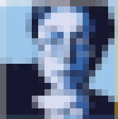
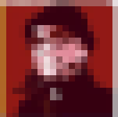
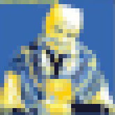
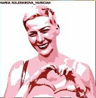
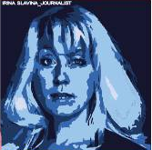
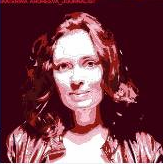
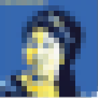

The Nine Women
May 29, 2022
This is a street art created by the Belgian activists from the Russian Solidarity movement aiming at bringing public attention to nowadays issues in Ukraine, Russia and Belarus. The mural gathers the portraits of nine women, who are well-known activists, journalists and artists. As a consequence of their pro-democratic and liberal views, they became victims of the autocratic regimes. Ukrainians and Russians paid with their lives, Beloarussians found themselves imprisoned. How many others should suffer or die from this regime? In the memory of brave.
 Anna Politkovskaya [Анна Политковская] (1958-2006) was a Russian journalist reporting on political events in Russia and, in particular, on the Second Chechen War which earned her an international reputation. She experienced numerous threats and was intimidated, yet refused to give up reporting. Her works include the book Putin's Russia, a critical view of the government. In 2006, she was murdered in the elevator of her block of flats.
 Vira Hyrych [Віра Гирич] (1967-2022) was a Ukrainian journalist and radio producer at Radio Free Europe. Vira was the key person to the frontline reporting and was behind every story about the war. She was killed during the Russian invasion of Ukraine after the building in Kyiv, where she lived, was hit by a Russian missile attack.
Vira Hyrych [Віра Гирич] (1967-2022) was a Ukrainian journalist and radio producer at Radio Free Europe. Vira was the key person to the frontline reporting and was behind every story about the war. She was killed during the Russian invasion of Ukraine after the building in Kyiv, where she lived, was hit by a Russian missile attack.
 Nina Baginskaya [Ніна Багінская] (born 1946) is a Belarusian human rights activist. For her anti-Soviet pro-Belarussian position, she was detained dozens of times and spent time in isolation cells. In 2014, she was arrested for burning the Soviet flag near the KGB building in Minsk. In 2020, Baginskaya became a symbol of the protest movement against fraud at the presidential elections. The Belarussian government takes half of her pension (77$/2) to cover the fines for her protests.
 Ludmila Savchenko [Людмила Савченко] (1929-2020), “Baba Luda”, was perhaps the oldest Ukrainian volunteer. Her mother died when she was young, and growing up she witnessed many Soviet repressions. She survived Holodomor and WW2. Since 2014, Baba Luda was helping wounded Ukrainian soldiers. She was often seen selling daisies and on the money received, she used to buy treats and cook meals for Ukrainian soldiers.
 Maria Kolesnikova [Марыя Калеснікава] (born 1982) is a Belarusian professional flutist and political activist. During the presidential elections in 2020, she headed a campaign of one of the candidates; she also represented Svetlana Tikhanovskaya. Eventually, she was kidnapped by police, taken to the border, and pressured to leave the country. She refused. She was sentenced to 11 years in a penal colony. She doesn’t give up though and says that a triumph of democracy in Belarus is only a matter of time.
 Irina Slavina [Ирина Славина] (1973-2020) was a Russian journalist from Nizhny Novgorod city, public and political figure, and founder and editor-in-chief of the opposition media “Koza Press”. On October 1, 2020, Slavina's house was searched as part of a criminal case related to “undesirable organisations”. Her family were intimidated, all her equipment seized. On the next day, she performed the act of self-immolation in front of the building of the Ministry of Internal Affairs.
Oksana Baulina [Оксана Баулина] (1979-2022) was a Russian journalist, and before that a producer of youtube channel “Navalny Live” and the channel of Anti-Corruption Foundation. In 2022, she was covering the events of Russian invasion of Ukraine. On March 23, 2022, she was reporting on the consequences of the shelling of Kyiv; she fell a victim of a repeated shelling of the same place.
 Katsyaryna Andreeva [Кацярына Андрэева] (born 1993) is a Belarussian journalist working for Belsat TV. On November 2020, she broadcasted the cruel raid of the police on the Square of Changes. Later she became a suspect in a criminal case on organizing actions that attack public order. She was sentenced to serve two years in prison for “pushing Belarusian protests”.
 Lyubov Panchenko [Любо́в Па́нченко] (1938-2022) was a Ukrainian visual artist and fashion designer. She defended the Ukrainian language and culture. She painted pysanka Easter eggs, embroidered national costumes for choirs, and raised money to help political prisoners. Panchenko died, reportedly from a starvation caused by the Russian invasion, in Bucha on 30 April 2022, at the age of 84.
For more details about our activities, follow our facebook page.